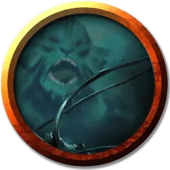

Сахуагин Повелитель волн
Sahuagin Wave Shaper
Средний Гуманоид (Сахуагин), законно-злой

Класс Доспеха 14 (природный доспех)
Хиты 60 (11к8 + 11)
Скорость 30 футов, плавая 40 футов
| мод | спас | ||
|---|---|---|---|
| СИЛ | 10 | +0 | +0 |
| ЛОВ | 12 | +1 | +1 |
| ТЕЛ | 12 | +1 | +1 |
| мод | спас | ||
|---|---|---|---|
| ИНТ | 16 | +3 | +3 |
| МДР | 14 | +2 | +2 |
| ХАР | 12 | +1 | +1 |
Навыки Восприятие +5, Запугивание +4, Магия +6
Чувства тёмное зрение 120 футов, пассивное Восприятие 15
Языки Сахуагинский
Опасность 5 (1800 опыта)
Бонус мастерства +3
Особенности
Кровавое бешенство. Сахуагин совершает с преимуществом броски рукопашных атак по существам, у которых хиты ниже максимума.
Ограниченная амфибийность. Сахуагин может дышать и воздухом и под водой, но чтобы не задохнуться, ему нужно погружаться в воду хотя бы раз каждые 4 часа.
Акулья телепатия. Сахуагин может магическим образом командовать всеми акулами, находящимися в пределах 120 футов от него, при помощи ограниченной телепатии.
Врождённое колдовство. Базовой характеристикой сахуагина является Интеллект (Сл спасброска от заклинания 14, +6 к попаданию атаками заклинаниями). Он может накладывать следующие заклинания, не нуждаясь в материальных компонентах:
• Неограниченно: сообщение [message];
• 1/день: понимание языков [comprehend languages].
Действия
Мультиатака. Сахуагин совершает две атаки: одну атаку Укусом и одну атаку Когтями.
Укус. Рукопашная атака оружием: +4 к попаданию, досягаемость 5 футов, одна цель. Попадание: 10 (2к8 + 1) колющего урона плюс 13 (3к8) урона холодом.
Когти. Рукопашная атака оружием: +4 к попаданию, досягаемость 5 футов, одна цель. Попадание: 10 (2к8 + 1) рубящего урона плюс 13 (3к8) урона холодом.
Водоворот (1/день). Повелитель волн нацеливается на водоем площадью не менее 50 квадратных футов и глубиной 25 футов, в результате чего в центре этой области образуется водоворот. Водоворот образует воронку шириной 5 футов у основания, шириной до 50 футов наверху, высотой 25 футов и существует 1 минуту или до тех пор, пока повелитель волн не станет недееспособен. Любое существо или предмет, находящиеся в воде и находящиеся в пределах 25 футов от воронки, притягиваются к ней на 10 футов. Существо может отплыть из воронки, преуспев в проверке Силы Сл 14 (Атлетика).
Когда существо впервые за ход оказывается в воронке или начинает в ней свой ход, оно должно совершить спасбросок Силы Сл 14. При провале существо получает 9 (2к8) дробящего урона и затягивается в воронку, пока она не закончится. В случае успеха существо получает половину этого урона и не затягивается в воронку. Существо, затянутое в воронку, может использовать свое действие, чтобы попытаться выплыть воронки, как описано выше, но она совершает эту проверку Силы (Атлетика) с помехой.
В первый раз за каждый ход, когда кто то попадает в воронку, он получает 9 (2к8) дробящего урона. Этот урон наносится каждый раунд, пока он остается в воронке.
Описание
Эти сгорбленные и скрюченные сахуагины приносят свои тела в жертву изменяющей магии Секола. Повелители волн добавляют стихийную магию к вооруженным силам сахуагинов (как показано в "Финальном противнике") и наслаждаются созданием разрушительных водоворотов.